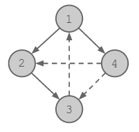
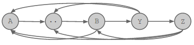

Video of Igor Naverniouk’s explanation.
We can view the set of preferences as a directed graph. We have a node in the graph for each candy, and if we prefer candy X over candy Y, then there is a directed edge from the node for X to the node for Y.
We first describe a procedure to determine if we can find any valid permutation, then we describe a process to find the lexicographically smallest permutation.
To answer this question, we will use a depth-first search in the graph described above. We use A, the target candy, as the root of the search. A valid permutation exists if and only if we can visit all other candies from the root. Otherwise, there is no valid permutation. Why is that?
If all the candies are reached in the DFS, then we have a directed tree rooted at A containing all the nodes. Then we can generate a valid permutation by printing the nodes using a post-order traversal of the tree (i.e. each node is placed in post-order in the permutation order).
In that permutation, A is the last candy that Vlad will be offered, and Vlad will keep it. To see why this is true, consider the tree implied by the depth-first search. Let X be the candy Vlad is holding before receiving candy A. X must have been preferred to every candy between X and A in the post-order traversal. If X was not a child of A, then one of those candies must be X's parent in the tree, which Vlad would prefer over X. So X must be a child of candy A in the depth-first search, so he will prefer to keep A when offered it.
We demonstrate this with an example for the following test case:
4 1 -YNY N-YN YN-N NYY-
There are 4 candies, and the target candy is candy 1. The candy preferences are shown by directed edges in the figure below. The solid lines represent the tree the DFS found, while the dashed lines represent the edges that were not taken during the DFS.
In the post-order traversal, we get the permutation (ordering) 3, 2, 4, 1, which is a valid permutation that leads to our target candy 1 being chosen in the end.
Now we show that if there is a candy that we do not visit in the DFS, then there is no valid permutation. Let X be a candy that is not reached. Let Y be the candy that Vlad keeps after receiving candy X. Y is either X, or another candy which Vlad prefers to X, in which case there is a directed edge in the graph from Y to X. Y is not A, because there cannot be an edge from A to X, or X would have been visited in the depth-first traversal. Consider the list of unique candies that Vlad chooses to keep, in order of time. Assume that Vlad will end up with candy A. The list of kept candies must then end in A, and contain Y earlier in the list. In the sublist of candies between Y and A, Vlad prefers each candy to the one before it. But this means there must be a directed path in the graph from A to X, which is impossible because X was not visited in the DFS. So Vlad cannot end up with candy A.
Thus by using the depth-first traversal procedure, we can answer if the given input can form a valid permutation.
In the following sections, we describe the procedure to generate the lexicographically-smallest permutation.
We will use a greedy strategy to find the lexicographically-smallest permutation. To help us with the greedy strategy, we discuss the case of a partial solution. We want to answer if we can generate a valid permutation from this partial list. In the partial list, the first few numbers (candies) of the lexicographically-smallest permutation have been selected, and one of those candies is the current “best” (preferred) candy B (which might be equal to A). We modify our graph by removing all the numbers (except B) that are already selected in the permutation.
The goal is to answer if we can end up with A from the current partial solution. Trivially, if A is part of the set of removed numbers then it is impossible to generate a valid permutation (we can never end up with A from this state). But if A is not part of the removed set then there are two cases to consider: (i) B is equal to A, or (ii) B is not equal to A. If it is case (i), then A must be preferred over all remaining candies for us to end up with A, otherwise we can report that we cannot generate a valid permutation from this partial solution. Now, let us deal with the more complicated case (ii).
First note that we cannot just use the idea proposed in the section “Is a permutation possible?”, i.e. pick A as the root, then do post-order depth-first traversal on the remaining nodes. The depth-first search might contain a path as follows: A->..->B->Y->Z (see figure below). Then we can't use the post-order traversal, because B is already being held by Vlad, so Y and Z can't occur before it.
Instead, we follow the following procedure:
If this succeeds in adding every node to the tree, then it is possible to complete the permutation, otherwise it is not.
To construct the remainder of a permutation from this tree, we first append to the partial solution all the children of B that were added in step 2. Vlad prefers B to each of these. Then we remove B and its children from the tree, and append a post-order traversal of the remaining tree. This results in A winning, for the same reasons as for the algorithm in the previous section for determining feasibility of the whole permutation.
Also similarly to the previous section, we can show that if there is a node X which is not added to the tree by the above procedure, then Vlad cannot be left with A, or else there would be a path from A to X that would have allowed X to be added to the tree.We described above a method to determine if we can generate a valid permutation from a given partial solution. Using this idea, we give an algorithm that provides us with the lexicographically-smallest permutation.
We start with an empty prefix of the permutation, then iteratively add the lexicographically smallest candy that leads to a valid prefix. It reports a partial solution as impossible if no candy can be added to the partial solution leading to a valid solution. This algorithm is outlined in the pseudocode below:
Let P = [] // The partial solution
If !IsValidPartialSolution(P)
return IMPOSSIBLE
Repeat N times
For i = 1 to N
// Test if appending i to P gives a valid partial solution
If P.contains(i) is false
If IsValidPartialSolution(P + [i]) is true
P = P + [i]
Break
Return P
Sample implementation in Python 3:
def dfs(i, removed, visited):
visited.add(i)
for j in range(len(prefer[i])):
if prefer[i][j] == 'Y':
if j not in visited and j not in removed:
dfs(j, removed, visited)
def valid(partial):
B = partial[0]
for i in partial:
if prefer[i][B] == 'Y':
B = i
removed = set(partial)
removed.remove(B)
# Trivial case.
if A in removed: return False
# Case (i)
if A == B:
for i in range(N):
if i != A and i not in removed:
if prefer[A][i] != 'Y':
return False
return True
# Case (ii)
visited = set([B])
dfs(A, removed, visited)
for i in range(len(prefer[B])):
if prefer[B][i] == 'Y':
visited.add(i)
return len(visited.union(removed)) == N
def solve():
visited = set()
dfs(A, set(), visited)
if len(visited) != N: return "IMPOSSIBLE"
partial = []
for i in range(N):
for j in range(N):
if j not in partial and valid(partial + [j]):
partial = partial + [j]
break
return ' '.join(map(str, partial))
for tc in range(int(input())):
[N, A] = map(int, input().split())
prefer = []
for i in range(N):
prefer.append(input())
print("Case #%d: %s" % (tc + 1, solve()))